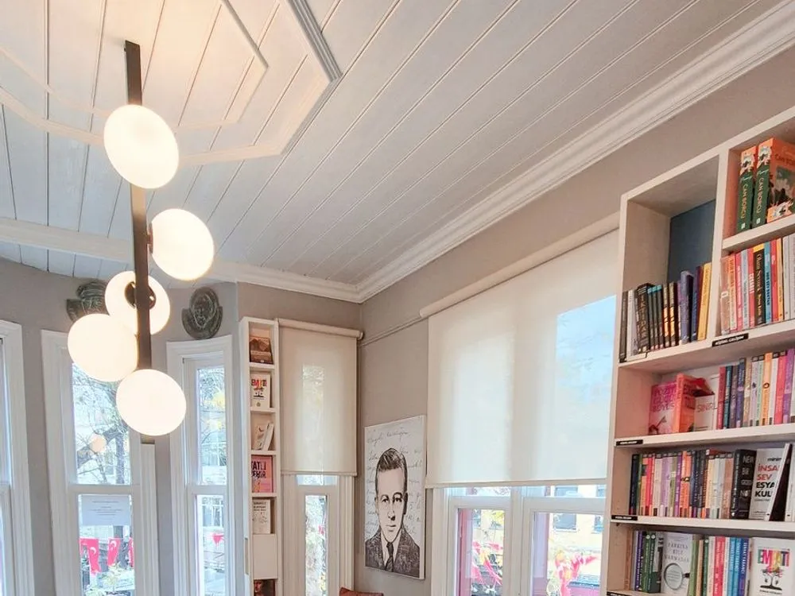

- Home
- About
A shop with opinions.
Pagebound is run by four booksellers who read everything we stock. No algorithms, no promotions we don’t believe in.

Our story
Twenty-eight years of putting the right book in the right hands.
We started in 1998 with two rooms and nine hundred secondhand paperbacks. Today we’re a proper shop with a proper kettle, and a proper belief that a bookshop is a place, not a website.
This site exists so you can browse from your sofa and reserve what you like. But the best part is still walking in.
The booksellers
Hana Rahimi
Owner & fiction buyer
Opened Pagebound after fifteen years at a big chain, and has never looked back. Ask her for something to read after your favourite novel.
Dev Chaudhary
Crime & thrillers
Reads two books a week and keeps a spreadsheet of every locked-room mystery ever written. Yes, really.
Priya Nair
Children’s & sci-fi
Runs story time and the sci-fi shelf with equal enthusiasm. Can recommend a picture book for any mood.
Moira Lennox
Events & poetry
Organises our evenings, pours the wine and reads poetry out loud when the shop is quiet.
Along the way
A short history
- 1998 Two rooms and a kettle
Hana’s mum lends her the deposit and the first stock is 900 secondhand paperbacks.
- 2006 We move to Canongate
The old printing works becomes our home. The shelves still creak the way they did on day one.
- 2014 The first book club
Six people, one crime novel. It is now a monthly sell-out.
- 2020 Click and collect
We quietly built an online shelf and posted books on bicycles.
- Today Twelve thousand books
Still independent, still choosing every title ourselves, still talking you out of the wrong one.
- Books on the shelves
- 12,000
- Years independent
- 28
- Events a year
- 60+
- Cups of tea poured
- 41,000
Picture credits
The greyscale pictures on the home page show Edinburgh's Royal Mile and the book trade. They come from Wikimedia Commons, are shown in greyscale and cropped, and are credited below. The book covers are photographs set with live titles.
- Canongate, Edinburgh - geograph.org.uk - 6440835, by Colin Park, CC BY-SA 2.0.
- Edinburgh Canongate Kirk-20110902-RM-153622, by Ermell, CC BY-SA 4.0.
- Gate to Canongate, Edinburgh - geograph.org.uk - 5877722, by Jim Barton, CC BY-SA 2.0.
- The-canongate-tolbooth-edinburgh-from-the-west, by Henry Gibson Duguid, public domain.
- PXL 20241214 113033658 Royal Mile Edinburgh United Kingdom 12, by Sourabh.biswas003, CC BY-SA 4.0.
- Dunbar's Close Gdn, Royal Mile Edinburgh 004, by Brian McNeil, CC BY 3.0.
- South Gray's Close from the Royal Mile, by Jay.addison, CC BY-SA 4.0.
- Niddry Street, Old Town, Edinburgh - geograph.org.uk - 8249991, by Mr H, CC BY-SA 2.0.
- New Assembly Close, Edinburgh, by Stephencdickson, CC BY-SA 4.0.
- Parliament Square, Edinburgh facing east, by Stephencdickson, CC BY-SA 4.0.
- On the Shelf (Unsplash), by Jonathan Simcoe jdsimcoe, CC0.
- Royal Society library books, by Mike Peel, public domain.
- Harewood House The Old Library, by Michael D Beckwith, CC0.
- Printing press (Albion), by Rodw, CC BY-SA 3.0.
- Old Threshers Miehle Press Drum, by Douglas W. Jones, CC0.
- Margaret Chapman 1906 bookbinding and design; An anthology of Australian verse, by Margaret Chapman, public domain.
- Bookshop interior - geograph.org.uk - 7540912, by Anthony O'Neil, CC BY-SA 2.0.


.jpg){kind=link}

.jpeg){kind=link}
.JPG){kind=link}